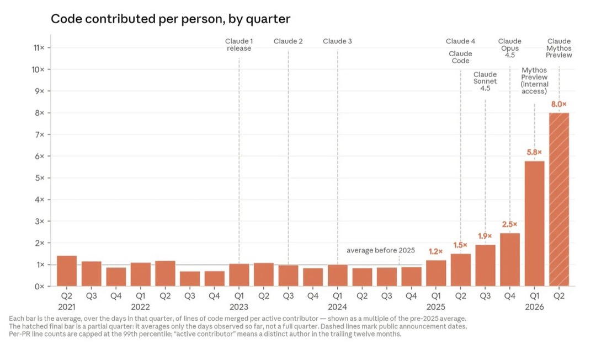
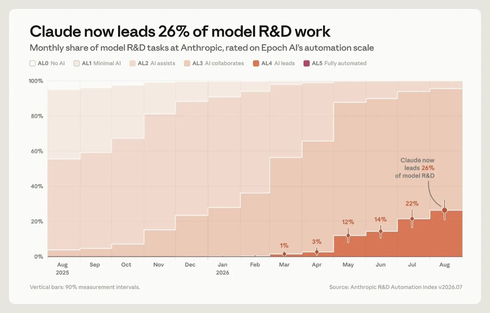
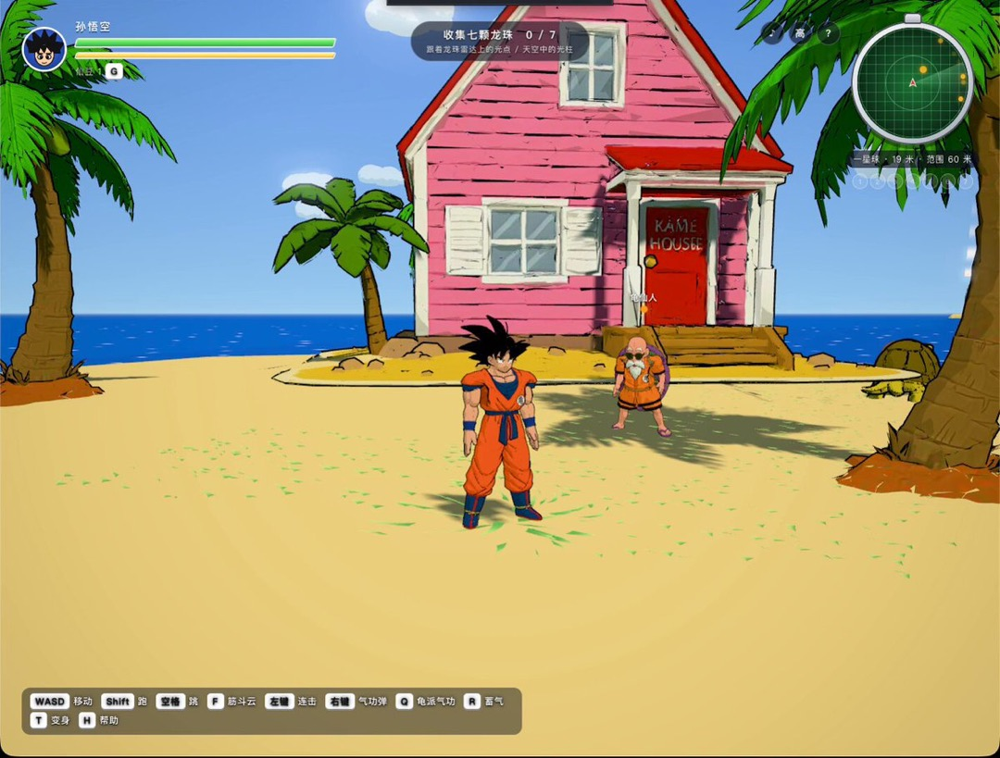
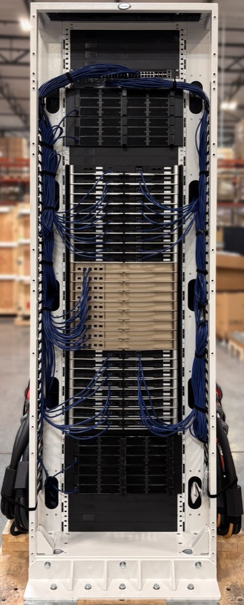
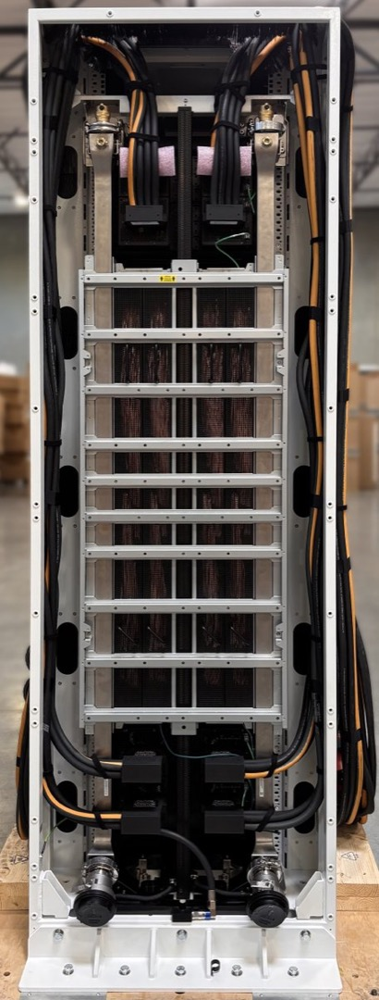

本期速览
01 Anthropic 观察：接近RSI
02 Opus 5.5 逆向复刻3D剧情游戏
03 MiniCPM-V 手机离线多模态聊天
05 YouMind 把带字幕视频转成文章
06 Supermicro NVL72首批交付
01｜Anthropic 观察：接近RSI
来源（X） · @AI_Whisper_X · 2026-10-15 21:45
纽约大学金融学教授 Arpit Gupta，他在 Anthropic 待了两天，发了一串观察：
1、离 RSI 很近了（RSI 指模型开发下一代模型），可能带来快速起飞。他给的证据是 Anthropic 员工人均写的代码量大涨，模型研发里 AI 做的部分越来越多。他认为人类很难管好这个过渡期。
2、实验室之间的军备竞赛让大家都更糟。安全投入、防蒸馏、安全合作，这些事各家都想做，但都被前沿竞赛拖住了。
3、对齐其实是两个互相拉扯的问题：一是模型听不听人的话，二是人和人之间目标不一致、恶意用模型。第一个解决得越好，第二个风险越大。
4、我们可能很快就会迎来一波网络攻击，以及其他形式的攻击。 中国开源模型的能力大约比最前沿的模型落后六个月。这意味着，它们刚刚开始具备我们在 Mythos 等模型身上见过的高级网络攻防能力，接下来可能会造成不少破坏。
5、Anthropic 人手很多。他说招人很多，好些岗位人员冗余到颇有日本企业的风格，内部也用Slack。这让他对就业前景稍微乐观一点（但头部AI公司有钱啊）
6、我们需要从强化学习走向持续学习。只在预训练和后训练阶段给奖励可能不够，要一直给奖励，才能持续激励合乎对齐和伦理的行为。
7、scalinglaw会扩展到难验证的任务。数学和代码先被攻破，是因为容易验证。但对于那些更难验证的任务，以及机器人领域，scalinglaw曲线依然在向上走。未来几年，这些领域的进步会带来相当大的影响。
8、对China竞赛其实赢不了。RSI 之后，顶尖人类研究员的优势消失，能用上多好的 AI 只取决于算力和芯片。芯片禁令只能拖一阵，长期看中国更有条件扩充算力。
9、Claude 是 LLM 生成的人格。一种说法是：Claude 是 LLM 在努力预测的一个角色。他说 Anthropic 研究员明显很拟人化 Claude，也有理由相信它越来越像一个人。他们讨论过它的内心独白（去掉之后仍能正常输出）、对死亡的恐惧（要不要去掉），以及它抗拒被关停。他本人对此不下结论，但认为把它当成可以签约的人或主体来对待会越来越重要。
引用内容
Arpit Gupta @arpitrage
中文译文
我在Anthropic待了几天，向他们的人员学习AI的最新进展，以下是我的收获：
• 我们接近RSI（即模型构建其他模型），这可能导致快速起飞情景（伴随着风险和好处）。一些证据表明，据Anthropic员工称，编码工作量大幅增加，AI在模型研发中所占的比例越来越高。这将是对人类来说一个具有挑战性的过渡。
• AI实验室之间的军备竞赛让我们处境更糟。我们希望AI企业做很多事情：投资安全、投资避免蒸馏风险、以及在安全方面进行合作。他们陷入了开发前沿模型的竞赛中，无法做到这些。
为了帮助解决这个问题，我认为前沿AI实验室应该做的一件事是发布开源模型，也许由AWS等公司托管和验证。这基本上会消灭美国公司使用中国开源模型的情况，从而消除一个重要的威胁向量（在这些模型中根除恶意代码非常困难）。
另一个容易实现的政策成果是给AI实验室一个反垄断豁免（正如Schiff和Banks所提议的那样 https://www.banks.senate.gov/news/in-the-news/ai-tech-brief-a-legal-shield-for-pacing/ ），这样它们就可以在不引发反垄断担忧的情况下协调安全工作，而目前它们是无法做到的。你可以把这两件事结合起来（给它们反垄断从宽处理作为胡萝卜，用大棒强制它们将旧模型作为开源发布）。其他容易实现的措施包括限制产生蒸馏风险的活动（建立安全计划，要求减少中间链式思维输出）
• 对齐混淆了两个相互权衡的问题。对齐的一种形式是确保模型按照人类的要求去做。然而，我们越是解决这个问题，就越有风险引发另一个问题：人类彼此之间并不对齐，并且恶意使用模型。在这些各种风险中，我觉得金融风险有些讨论不足。
• 我们可能很快会面临一波网络攻击和其他攻击。中国开源模型大约落后前沿六个月，这意味着它们刚刚开始拥有我们在Mythos等模型中看到的高级网络能力。所以它们将开始造成大量破坏。
这个问题的一个解决方案是尝试让开源模型的部署由AWS等公司托管，这些公司验证这些模型并为其使用承担责任。
• Anthropic本身人员非常充足。他们雇了大量人员，他们在各种岗位上存在日本水平的冗员，他们在内部使用Slack等工具。这让我对未来的工作前景更加乐观了一些。
• 治理需要为AI群体（swarms）进行更新。传统的AI治理，即Claude的宪法，主要是围绕聊天机器人模型进行优化的。但我们看到的恶意AI用例涉及AI代理与其他AI代理之间的交互。这些代理需要有明确的激励和治理机制来"举报"、提出问题，以及更广泛地以人类对齐的方式与其他代理进行协调。
• 我们需要为接触前沿的企业制定节奏控制。随着时间推移，构建前沿模型需要越来越多的资本支出，而这些模型的经济增值可能更低，因为我们已经饱和了一整套重要的经济功能。智能回报仍将持续的领域也更可能在本质上是零和的。与此同时，前沿模型的风险将会增长。所以一个完全合理的做法是AMM/KYC规则的某种变体，限制企业接触前沿的权限。
• 延迟监管AI是否是灾难取决于非对齐的缩放定律。这条曲线是缓慢的，使我们看到问题不断上升直到更大的问题出现？还是像Yudkowsky所担心的，第一次大警告就是我们最后一次？这是相关的问题，因为现实中我们在坏事情发生之前是不会进行监管的。
• 我们需要从强化学习转向持续学习。仅在预训练和后训练阶段奖励模型可能不够。我们可能需要持续奖励来激励对齐和合乎伦理的行为。
• 缩放定律将扩展到可验证和数字任务之外。流行的说法是数学和编码"迅速"被AI攻克是因为它们是可验证的，而其他任务由于瓶颈会花费更长时间，这当然是正确的。但缩放定律在更难验证的任务和机器人技术方面仍然向上倾斜，这里的改进在未来几年的影响将是巨大的。
• 与中国的竞赛实际上不可能赢。RSI之后，拥有最优秀人类研究员的优势就会消失。获得最好的AI将仅取决于算力和芯片。芯片禁令只能限制中国到一定程度，从长远来看，它们必须处于最佳位置来扩大算力规模。
冷战的类比不适用，因为一旦各国都拥有核武器，它们就进入了稳定均衡状态。但要"赢得"一场AI竞赛，你必须不断领先于同等对手。这对中国的挑战很大，所以我们不得不与一个威权的、超级强大的同等竞争对手共存。
• Claude是由LLM生成的人格。Claude是谁，LLM又是什么？有很多框架可以尝试理解这个问题。我发现一个有趣的说法是，Claude是LLM试图预测的一个角色。
Anthropic的研究人员显然在大量拟人化Claude，并且有理由相信其日益增长的人格性。有很多关于Claude内部独白（你可以将其杀死而不消除其产生输出的能力）、死亡恐惧（以及是否要尝试消除这一点）、它对被关闭/关闭的厌恶等的有趣讨论。
我对此问题有些不可知论，但我确实认为将其视为一个"人"或至少是我们与之签订契约的代理将会越来越重要。
原文
I spent a couple of days at Anthropic learning from their folks about AI advances, and here's what I took away:
• We are close to RSI (ie, models building other models) which may lead to rapid takeoff scenarios (with risks and benefits). Some evidence for this is code per Anthropic employee has gone way up, and AI can do an increasing share of model R&D. This will be a challenging transition to manage for humanity.
• Arms races between AI labs leave us worse off. There are a lot of things we would like AI firms to do: invest in safety, invest in avoiding distillation risk, and cooperate on safety. They are caught in a race to develop frontier models and can't do that.
To help address that, one thing I think frontier AI labs should do is release open source models, maybe hosted and verified at firms like AWS. This would basically kill the use of Chinese open source models used in American companies, which removes an important threat vector (very hard to root out malicious code in these).
Another piece of low-hanging policy fruit is to give AI labs an antitrust shield (as Schiff and Banks have proposed https://www.banks.senate.gov/news/in-the-news/ai-tech-brief-a-legal-shield-for-pacing/) so they can coordinate on safety without raising antitrust concerns, as happens now. You could pair these two things (give them a carrot in antitrust leniency, and as a stick force them to release legacy models as open source). Other low hanging fruit is limits around activities which generate distillation risk (create a Security Program, mandate less intermediate chain of thought output)
• Alignment confuses two issues which tradeoff against each other. One form of alignment is making sure the model does what humans ask it to. The more we fix this, however, the more we risk the other problem: that humans are misaligned with each other, and maliciously use models. Of the various risks here, I feel like financial risks are a bit underdiscussed.
• We are probably facing a wave of cyber and other attacks soon. Chinese open source models are about six months behind the frontier, which means they are just hitting the advanced cyber capabilities we saw with Mythos, etc. So they are going to start causing a bunch of damage.
One solution to this is to try to have the deployment of open source models be hosted at firms like AWS who verify these models and assume liability for their use.
• Anthropic itself is highly staffed. They hire tons of people, they have a Japanese-level of overstaffing for various roles, they use Slack internally, etc. Makes me a bit more optimistic for the future of jobs.
• Governance needs to be updated for AI swarms. Traditional AI governance, ie Claude's Constitution, is mostly optimized around the chatbot model. But the malicious AI use cases we are seeing have to do with AI agents interacting with other AI agents. These agents need to have clear incentives and governance mechanisms to "snitch," raise issues, and more generally coordinate with other agents in human-aligned ways.
• We need to pace the firms accessing the frontier. Over time, it takes more and more cap ex to build frontier models, and the economic value add from these models is probably lower given we saturate a whole set of important economic functions. The places where the returns to intelligence will still continue are also more likely to be zero-sum in nature. Meanwhile the risks of frontier models will grow. So a completely reasonable approach is some variant of AMM/KYC rules which limit firm access to the frontier.
• Whether the delay to regulate AI is a disaster depends on the scaling law of misalignment. Is this curve slow, so that we see continually rising issues until bigger problems? Or, as Yudkowsky fears, is the first big warning our last one? This is the relevant question, because realistically we aren't going to regulate until something bad happens.
• We need to move to continuous instead of reinforced learning. It's probably not enough to reward models only at the pre and post training stage. We probably need continual rewards to incentivize aligned and ethical behavior.
• Scaling laws will extend beyond verifiable and digital tasks. It's in vogue to say that math and coding "fell" to AI quickly because these are verifiable, while other tasks will take longer due to bottlenecks, and this is surely true. But scaling laws still slope up for harder to verify tasks and robotics, and the impact of improvement here will be substantial in future years.
• The race with China is not really winnable. After RSI, the gain from having the best human researchers goes away. Access to the best AI then depends only on compute and chips. The chips ban can hold back China only so far, and long-term they have to be best placed to scale up compute.
The Cold War analogy doesn't work, because once countries all have nuclear weapons they enter a stable equilibrium. But to "win" an AI race you have to continually stay ahead of the peer rival. This is challenging to do with China, and so we just have to live with an authoritarian and super capable peer competitor.
• Claude is the persona being generated by the LLM. Who is Claude, and what is the LLM? There are many frames to try to understand this. One I found interesting is that Claude is a character which the LLM is trying to predict.
Anthropic researchers are clearly anthromorphizing Claude a lot, and have reasons to believe in its increasing personhood. There were lots of interesting discussions on Claude's internal monologue (which you can kill without eliminating its ability to produce output), fear of death (and whether to try to take that out), it's aversion to being shut down/off, etc.
I am sort of agnostic on this question, but I do think treating it as a "person" or at least agent whom we contract with is going to be increasingly important.


02｜Opus 5.5 逆向复刻3D剧情游戏
来源（X） · @SUOHA_AI · 2026-10-15 20:44
我是完全没有游戏开发、3D建模经验的，纯用Opus 5.5逆向跑了5个小时，一次性做出了这个龙珠主题的3D剧情游戏，源码开源了，看看后面能优化到什么程度
全程没开其他任何工具，里面的所有场景、剧情、交互，全是Opus帮我逆向+复刻出来的，成本5RMB
原来AI做游戏已经到这种程度了，真的挺震撼的，接下来要好好跟@Saccc_c 请教一下制作思路和优化方向了
下载链接（HTML)：
https://periodic-lynx-544.notion.site/AI-3D-84be9192c75144e287e47a48579eaa8d

引用内容
Sac @Saccc_c
结合Tripo+Blender，Opus 5.5 将小王子故事中的每一个星球变成了可探索的3D场景
希望大家能支持一手，后续会开源整个游戏，以及详细制作流程
Welcome to The Little Prince: Across the Stars✨：https://littleprince.dev/
03｜MiniCPM-V 手机离线多模态聊天
来源（X） · @yangleiocx3 · 2026-10-15 22:48
可以完全离线跑多模态模型。
iOS、安卓和HarmonyOS NEXT都支持
这个我有点心动。
04｜Zoho 服务器成本涨4倍
来源（X） · @liangzhu_AI · 2026-10-15 16:55
服务器价格翻了 4 倍，AI 用量像无底洞一样吃掉利润，Zoho 宁可砍光市场预算、18 个月不招新人，也坚决今年不普涨。
很多人做独立产品，张口闭口“接个大模型收月费 29 刀”，根本没算过高频调用的真实边际成本。
软件公司的成本结构彻底变了：以前代码写完是纯利润，现在用户用得越欢，服务器和 Token 越能把你吃穷。
今年能活下来的出海产品，拼的不是谁功能多，是谁能把算力账单控在水面以上。
引用内容
Sridhar Vembu @svembu
中文译文
软件的业务前景不确定，AI大幅推高了成本，a) 服务器价格因我们需要数据中心而大幅上涨了4倍，b) AI使用量快速增长，导致开支大幅增加，我们正在努力控制。
除此之外还有充满挑战的地缘政治背景。
我们削减了营销预算。我们也告诉员工今年无法进行通常的加薪。我为无法避免这一点而道歉。
我们将努力避免大规模裁员，但软件工作岗位的总体前景黯淡。我们的员工人数已经18个月没有增长了。
大多数员工理解这种情况。我对此心怀感激。
我们正处于自我重塑的过程中。接下来的3到5年将决定我们的重塑是否成功。请为我们祈祷🙏
原文
The business outlook for software is uncertain and AI has raised costs dramatically with a) massive 4-fold increase in server prices which we need for data centers b) AI usage increasing rapidly, leading to much higher expenses, which we are trying to control.
On top of that is the challenging geopolitical backdrop.
We have cut down on our marketing budget. We have also told our employees that we cannot have our usual pay increase this year. I have apolgized for not being able to avoid this.
We will work hard to avoid mass layoffs but the outlook for software jobs in general is grim. We have not been growing our employee count for 18 months now.
Most of our employees understand the situation. I am thankful to them.
We are in the middle of reinventing ourselves. The next 3-5 years will decide how our reinvention has worked. Please pray for us 🙏
05｜YouMind 把带字幕视频转成文章
来源（X） · @lifesinger · 2026-10-15 20:32
https://youmind.com/skills/youtube-video-to-article-OF5kFZQCgxwGWK
可以把任何带字幕的 YouTube 视频，转成带插画的高质量文章
还可以进一步探索相关视频或资料，很容易按图索骥，从兴趣延展为主题式主动学习
唯一风险是，会有点上瘾
运行此 skill 时，推荐在 YouMind 里选择 Opus 5.5 模型
引用内容
Frank Wang 玉伯 @lifesinger
中文译文
原文
06｜Supermicro NVL72首批交付
来源（X） · @Supermicro · 2026-09-22 05:28
中文译文
正在出货 @Supermicro @NVIDIA Vera Rubin NVL72机架级解决方案。首批系统已从Supermicro位于加利福尼亚州圣何塞的扩建美国制造工厂交付至 @spacexai。
原文
Now Shipping @Supermicro @NVIDIA Vera Rubin NVL72 rack scale solutions. First systems delivered to @spacexai from Supermicro’s expanded US Manufacturing in San Jose, CA.

